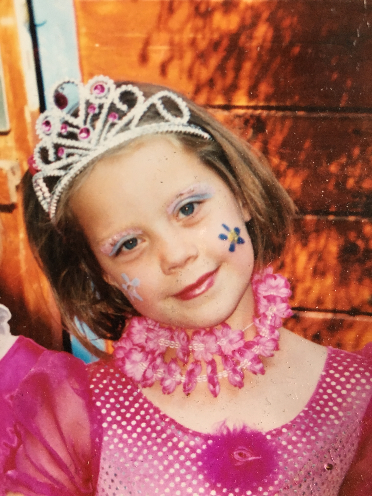
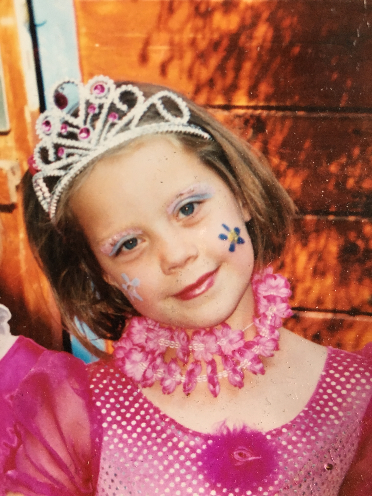
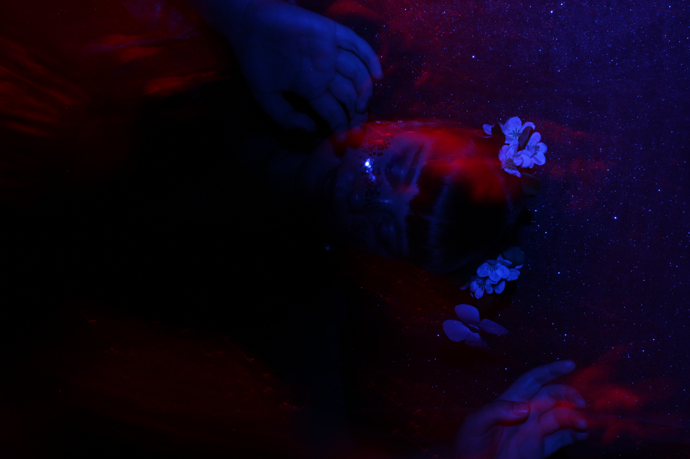
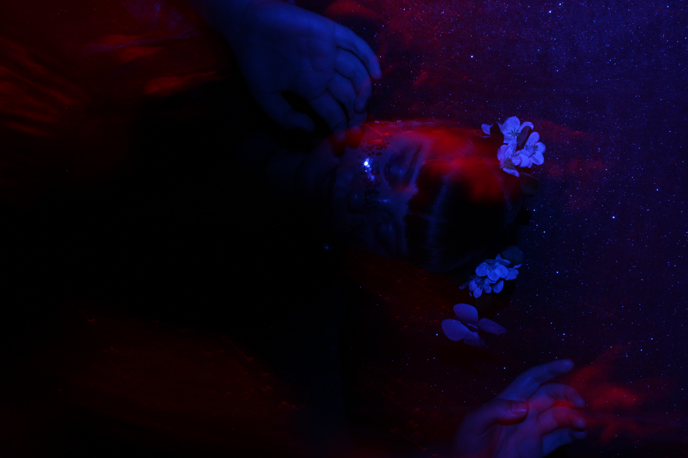
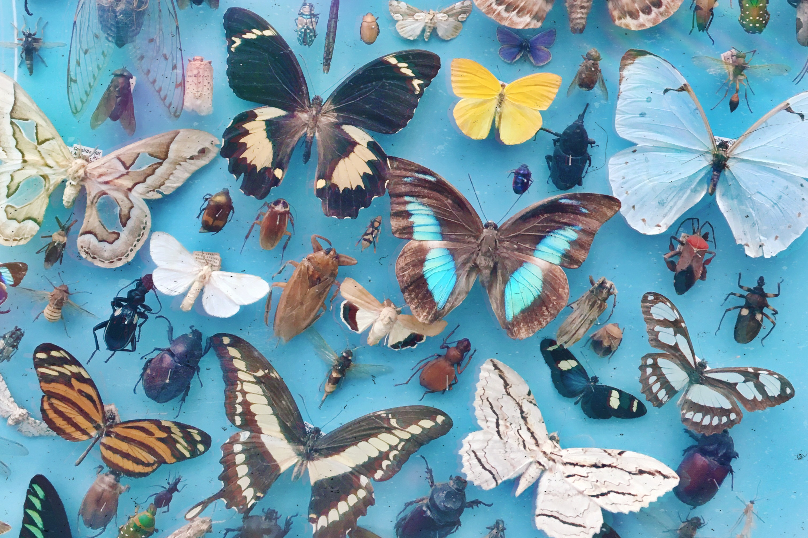
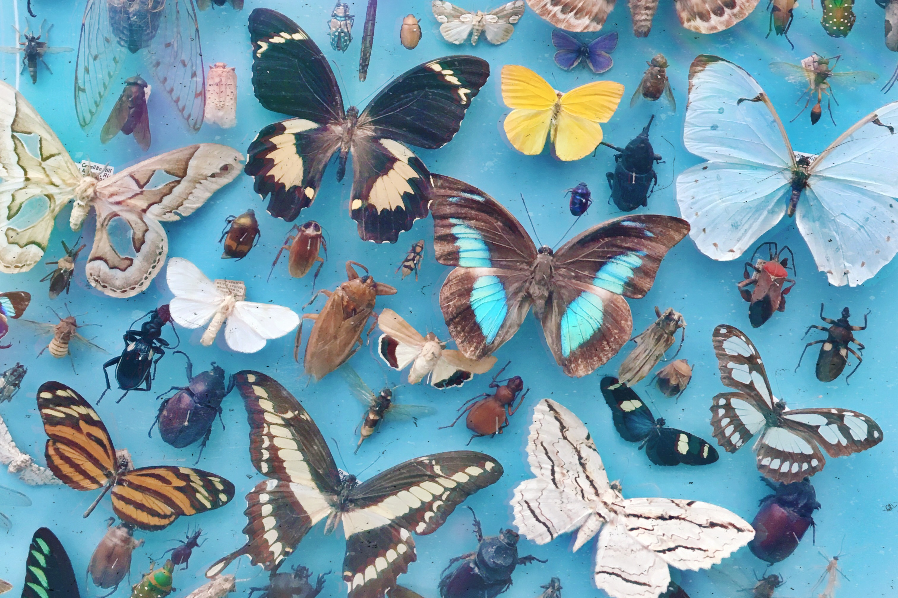

Who is miss starling?
With satin-like vocals and a fairy-like appearance Miss Starling creates her own little universe as a singer and songwriter in the electro-pop world.
She has always been interested in various art disciplines, such
as theater, dance, poetry, visual arts and of course music.
Her melancholic, electro-indie songs are described as “very fresh” and “quirky”.
Her stories may root deep in the dark, but her messages are warm and
give hope.
On her first released song ‘circles’, in collaboration with lofi-producer pucca, she already reached more than 300.000 streams on Spotify.


 

 



 
